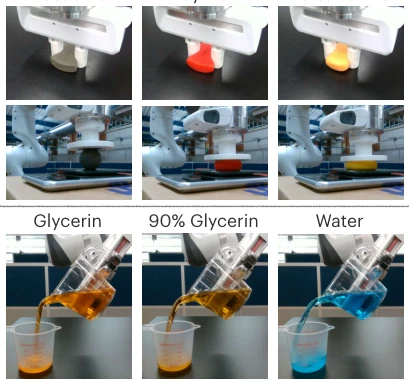
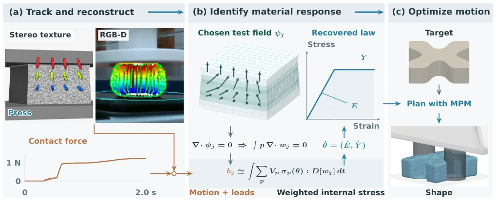
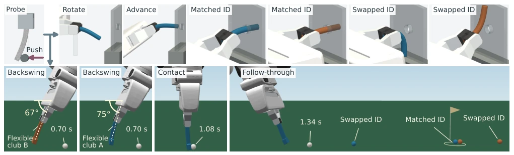
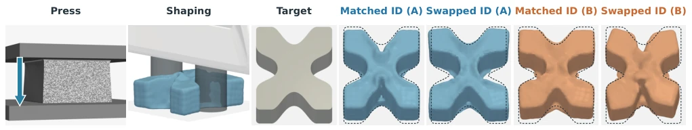
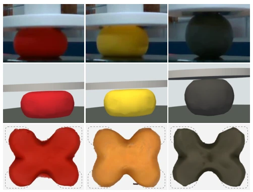
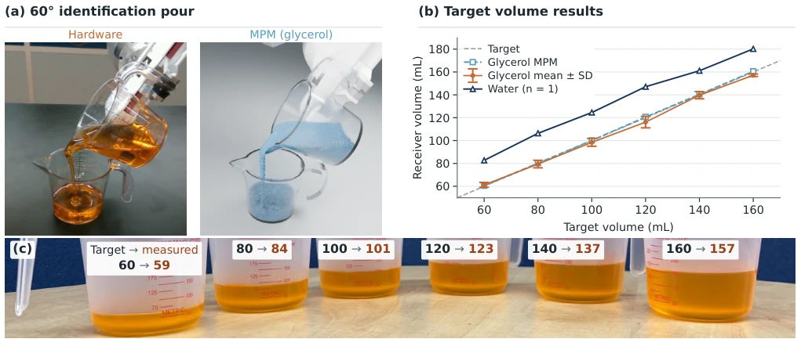

这篇 FORM 论文算是给软体机器人操控开了个“快速诊断”的偏方。核心卖点是用弱形式动量平衡，把材料识别从“猜谜”变成“解方程”，速度从十几分钟砍到几秒，这效率提升确实让人眼前一亮。不过，这招对视觉追踪要求极高，要是看不清内部变形，压力场还得靠假设补全，对于完全未知的材料，还得依赖预设的本构函数库，泛化性其实还是受限。虽然作者吹嘘“无需重拟合”，但在真机上，噪声和建模误差难免会让精度打折扣。总的来说，这是一个工程上很聪明的折中方案，牺牲了一点理论完备性，换来了实时的可操作性，适合那些对速度敏感但允许一定误差的交互场景。
This FORM paper serves as a "quick diagnosis" remedy for soft robot manipulation. The core selling point is using weak-form momentum balance to turn material identification from "guessing" into "solving equations", reducing the speed from over ten minutes to a few seconds; this efficiency improvement is indeed eye-catching. However, this approach has extremely high requirements for visual tracking; if internal deformation cannot be seen clearly, the pressure field still needs to be supplemented by assumptions, and for completely unknown materials, it still relies on preset constitutive function libraries, so generalization is actually still limited. Although the authors boast "no refitting needed", on real machines, noise and modeling errors will inevitably compromise accuracy. Overall, this is a very smart engineering compromise, sacrificing a bit of theoretical completeness to gain real-time operability, suitable for interaction scenarios that are sensitive to speed but allow for certain errors.
The biggest hurdle in robot manipulation of deformable bodies is "unknown materials". Different materials respond vastly differently to force, for example, two pieces of dough feel completely different when kneaded [12]. Existing solutions either rely on black-box models, hiding constitutive relationships in neural networks, with poor interpretability and requiring retraining when changing materials [1-3]; or use differentiable simulation for system identification; although it can explicitly recover parameters, it requires repeated simulation and backpropagation, making computational costs too high, often reaching thousands of seconds [4-6]. Weak-form identification is fast, but mostly targets controlled mechanical experiments, requiring full-field motion data, whereas robot interaction often has only partial observations accompanied by noise [7-9]. Therefore, there is an urgent need for a method that can quickly and explicitly recover material parameters from a single robot interaction and can be directly used for planning.
方法Method
FORM 的 pipeline 分三步：观测、识别、规划。首先，通过视觉（如立体纹理追踪或 RGB-D）重建材料表面运动，必要时结合接触力。核心创新在于利用弱形式动量平衡，将应力表示为候选本构响应的线性组合。通过选择散度为零的测试函数，消去未知压力项，将非线性问题转化为关于材料系数的线性最小二乘问题。关键在于，识别时的空间基函数（B-splines）与正向 MPM 仿真器的离散化完全一致，这意味着解出的参数可以直接喂给仿真器，无需转换或重新拟合。对于未知本构，引入函数编码器（Function Encoder）作为基函数，保持线性可解性。规划阶段，固定识别出的参数，在 MPM 中优化机器人动作序列。整个过程避免了迭代优化，单次识别仅需一次线性求解。
The FORM pipeline is divided into three steps: observation, identification, and planning. First, reconstruct material surface motion through vision (such as stereo texture tracking or RGB-D), combining with contact force if necessary. The core innovation lies in utilizing weak-form momentum balance to represent stress as a linear combination of candidate constitutive responses. By choosing test functions with zero divergence, the unknown pressure term is eliminated, converting the nonlinear problem into a linear least squares problem regarding material coefficients. The key is that the spatial basis functions (B-splines) during identification are completely consistent with the discretization of the forward MPM simulator, meaning the solved parameters can be fed directly to the simulator without conversion or refitting. For unknown constitutive models, a Function Encoder is introduced as basis functions, maintaining linear solvability. In the planning phase, fix the identified parameters and optimize the robot action sequence in MPM. The whole process avoids iterative optimization, requiring only one linear solve for single identification.
Experiments cover simulation and real robots, including elastic rod insertion, golf putting, elastoplastic shaping, and pouring water. Comparison baselines include NCLaw and differentiable system identification. Results show FORM identification time dropped from baselines of 10-25 minutes to 2-5 seconds, elastic parameter error <3.4%, elastoplastic <2%. In shaping tasks, IoU reached 72.4-77.8%, pouring error only 3.8mL. Ablation experiments show that even using only position observation (no stress), performance drop is limited but speed is faster. The key finding is that the model from single probe identification can be directly transferred to new actions and geometries without fine-tuning, proving the validity of parameter transfer.
其他图片Other Figures

Fig. 1. The dynamics of deformable materials and fluids are often hard to observe from vision alone. Active physical interaction is required to esti- mate their latent properties and enable robust manipulation policies. (Top) Starting from the same initial shape, applying the identical robot action such as a 25 mm pinch or a 10 N press results in different deformations dictated by the stiffness and yield behavior. (Bottom) Similarly, applying the same pouring action at 10 degrees per second results in distinct flow behaviors governed by the varying viscosities of the fluids.

Fig. 2. FORM: material identification and manipulation. (a) Synthetic stereo tracks and motion reconstructed from real RGB-D observations. Colors indicate image displacement in stereo and initial height in RGB-D. The force trace is from the synthetic press. (b) Divergence-free test fields remove pressure. Green arrows denote test vectors, not motion. The weak balance identifies stiffness E and yield threshold Y . The stress–strain curve is schematic. (c) The recovered model and target are used to plan the robot motion in MPM, illustrated here in the simulated shaping task.

Fig. 3. Stiffness from a common bending probe transfers to rod insertion (top) and elastic-club putting (bottom). Blue and orange denote materials A and B. The pale outline marks the initial rod pose. Putting shows B and A at the end of the backswing, then A at contact and follow-through. Arcs measure projected grip-to-head inclination relative to horizontal; white balls and timestamps show recorded motion states. Colored balls overlay final positions from four separate executions, with color denoting club material. The circle marks the stopping target.

Fig. 4. Material identification and X shaping in simulation. Left: A’s identification press and final planned pinch. The arrow indicates plate motion; translucent cylinders show the simulated fingers, with the hand illustrating their pose. Right: target shape and matched and swapped results for A (blue) and B (orange), all at a common scale. Results are shown 1 s after finger withdrawal; dashed outlines mark the target.

Fig. 5. Hardware pressing and shaping of red Play-Doh, yellow butter slime, and gray plasticine (left to right). Top: recorded pressing. Middle: force-driven MPM predictions at matching times, using models identified from separate presses. Simulation views are horizontally mirrored for display. Bottom: reconstructed shapes after four open-loop pinches, rigidly aligned to the dashed target outlines without scaling.

Fig. 6. Glycerol pouring with an identified model. (a) Hardware and MPM at matching times during the 60◦identification pour; this recording supplies both viscosity identification and effective contact calibration. Simulated liquid is colored blue for visibility. (b) Glycerol: frozen MPM predictions and hardware mean ± sample standard deviation over five trials per target. Water: one hardware trial per target, without error bars. (c) Repeat 2: target → measured receiver volume (mL), with readings rounded to the nearest mL.